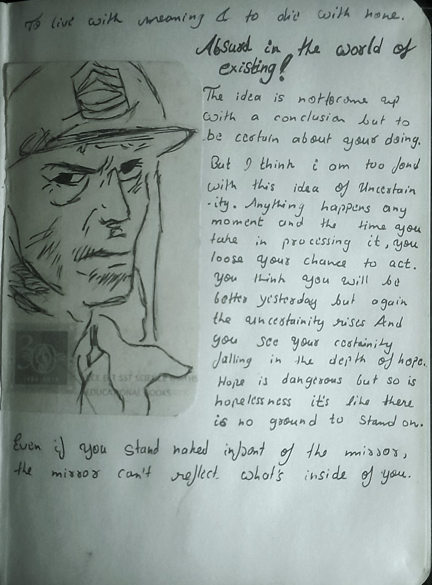

hello folks its me mario(oh, who am i even kidding), so i am aware i havent posted anything in like past 4-5 months i guess, i dont count. anyways i am back with my philosophy lecture 104.
today i might not be talking about a particular thing but multiple
so just earlier this day this sorta realisation crossed my mind, maybe i already knew but it was just now that my mind confirmed it to me, both religion and atheism are same in a way they both work on beliefs however agnosticism is a different or midground altogether it doesnt work on belief but on certainty, which in the case of agnosticism doesnt exist leaving a loot of room for doubt and skepticism unexplored.
now to me(no one asked) agnosticism isnt just about a deity, its about the living concept itself(samsara itself), its about how i believe or think that certainty is very limited cause its defined but not uncertainty which leaves me the courtesy to be even uncertain about myself. the idea is not to come up with a conclusion but to be certain about your doing. but i think i am too fond with the idea of uncertainty. anything happens any moment and the time you take in processing it, you loose your chance to act. you think you will be better yesterday but again the uncertainty rises and you see your certainty falling into the depths of hope. hope is dangerous as people say but so is hopelessness which is like there is no ground that you can stand on.
how i deal with people is i act in reflection and not in reaction. if someone is kind to me, i will be kind to them, if theyre rude then so am i, its just giving what i took.
there is this thing that bothered me for a while. my contradictions, but now i am come to see them as essence, contradiction lies in the very nature of universe thats why exceptions exist and one cant throw away the very thing that makes them human can they?
to live with meaning and to die with none.
ask me why and i’ll die…
P.S. I realised my blogs are more often revolving around me like what i think how i think and i am not sure if it should be that way or not